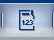

При нажатии на этот значок вы можете выбрать функции для настройки ваших устройств в вертикальной панели меню, например, настройку пластины, настройки сигнала, выбор языка, настройки материала и проверку данных онлайн-процессора.
Список заданий

Нажмите эту иконку, чтобы отобразить Список заданий Закладка. Список заданий показывает все задания, которые были отправлены с фронтального устройства на устройство экспонирования для обработки.
Услуги
При нажатии на этот значок можно выбрать функции для настроек сервиса в вертикальной панели меню, например, выбрать режим работы, определить порты, установить конфигурации и параметры системы, обновить программное обеспечение и т.д.
Удаленная служба Гейдельберга (HeiRes)
При нажатии на этот значок вы можете выбрать функции удаленного обслуживания в вертикальной панели меню.
Помогите
Нажатие на эту иконку отображает текст справки для открытого диалога.